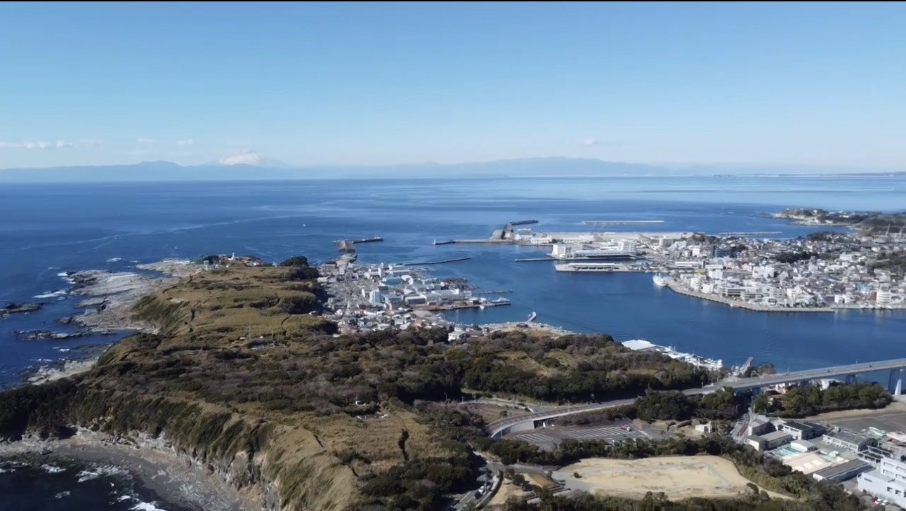
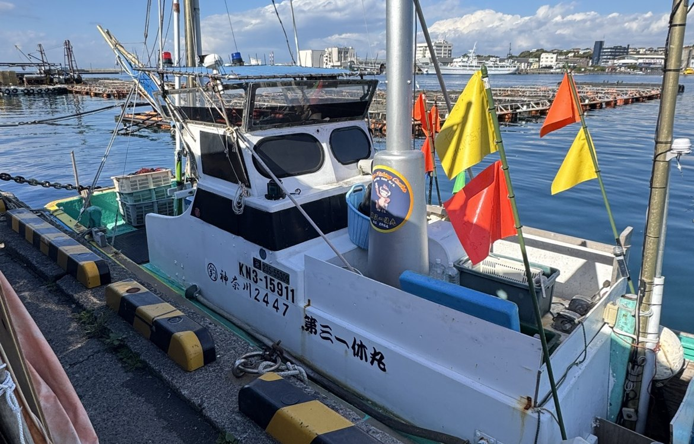
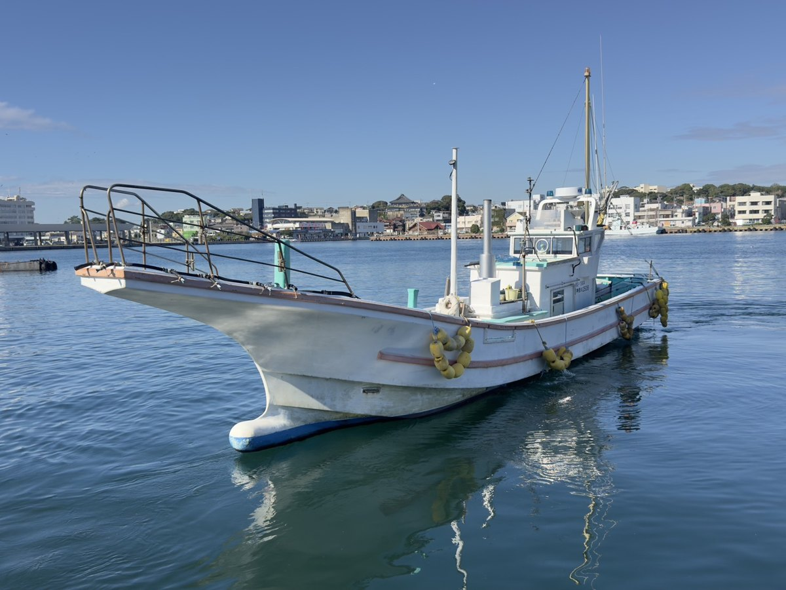

NO.1
一休丸
コマセ釣り、エサ釣り、泳がせ釣りを中心にご案内する船です。トイレ付きなので、長時間の釣行も安心です。
- 主な釣り物
- コマセ五目、マダイ、泳がせ釣り など
- 設備
- 男女兼用トイレ付き
- 定員
- 12名

ABOUT IKKYU-MARU
OUR STORY
神奈川県の最南端、城ヶ島。
一休丸は、この島で創業以来50年以上、釣り船と渡船を営んできました。
関東屈指の豊かな海と、島周りに点在する離れ磯。その魅力を、はじめての方からベテランの方まで、ひとりでも多くの方に味わっていただきたい。それが私たちの変わらない想いです。

OUR BOATS
釣り物や担当船長によって、ご予約の連絡先が異なります。
コマセ釣り、エサ釣り、泳がせ釣りを中心にご案内する船です。トイレ付きなので、長時間の釣行も安心です。

島周りの近場で楽しむ小物釣り・ルアー釣りの船です。はじめての方やご家族連れにも人気です。

エサ釣り、泳がせ釣り、ルアー釣りに対応。中深場のジギングなど、本格的な釣りにも出船します。

FERRY SERVICE
城ヶ島周辺の離れ磯へ、船でお送りします。釜島・千鳥島・猪ノ子島など、ポイント豊富な磯で本格的な磯釣りをお楽しみください。
ご希望の磯へのリクエストにもお応えします。

CONTACT
ご予約・お問い合わせ 電話受付 8:00〜20:00 ／ LINEでもお気軽にどうぞ